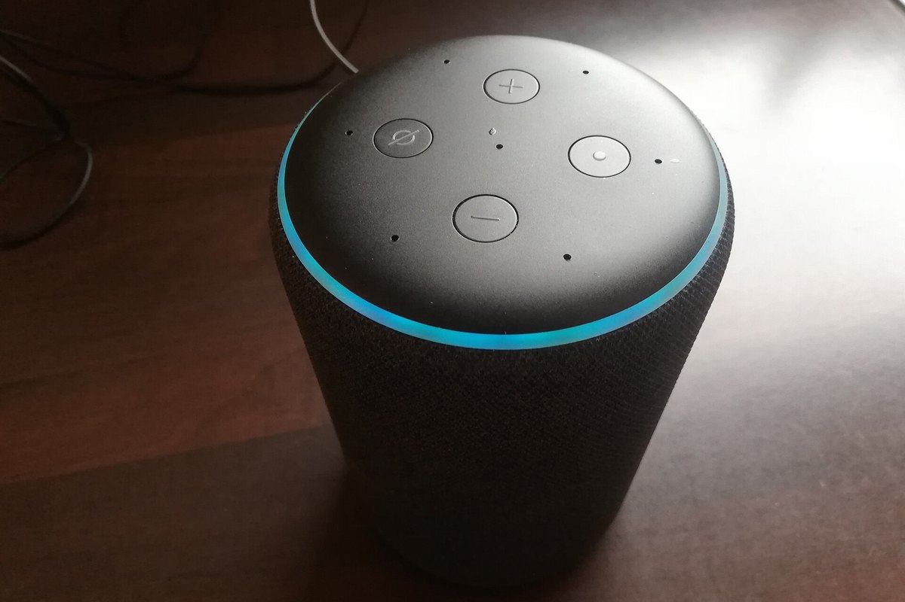

Розумний Дім 2.0
Екосистема для квартир і приватних будинків: голосове керування, енергоефективні сценарії та локальна обробка даних без хмари.
- Голосове керування українською мовою
- Енергоефективність до −37% споживання
- Шифрування даних на рівні пристрою
- Мобільний додаток для iOS та Android
- Підтримка 24/7 і оновлення OTA